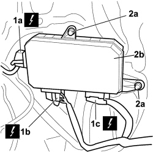

5505A43 CONTROL UNIT (DIGITAL NETWORK NODE) IN DRIVER'S DOOR - R.R. WITH PANEL REMOVED
- Path
- Procedures > 55 ELECTRICAL EQUIPMENT > 5505 INSTRUMENT/GAUGE ELECTRICAL CIRCUITS > 5505A MULTI-FUNCTION COMPONENTS > 5505A43 CONTROL UNIT (DIGITAL NETWORK NODE) IN DRIVER'S DOOR - R.R. WITH PANEL REMOVED
- Kind
- repair procedure (removal / refitting; the operation number is the code)
- Applies to
- all engines; all production periods
- Interactive page
- https://sloeber94.github.io/elrnDB-fCrm/en/#/194000676
Applies to: all engines; all production periods
Applies to: all engines; all production periods
 Removing
Removing
 Refitting
Refitting- Open the front side door, passenger side.
- Turn the ignition key to the OFF position.
- Disconnect the negative battery terminal.
- Wait for 10 minutes before continuing.
Description | Connector | |
|---|---|---|
BATTERY |
1. Release the three electrical connections (1a, 1b, 1c) from the mountings and disconnect them.
2. Undo the three fixing bolts (2a) and remove the control unit (2b) from the vehicle.
Description | Connector | |
|---|---|---|
1a | DRIVER'S DOOR JUNCTION UNIT (NPG) |
Description | Connector | |
|---|---|---|
1b | DRIVER'S DOOR JUNCTION UNIT (NPG) |
Description | Connector | |
|---|---|---|
1c | DRIVER'S DOOR JUNCTION UNIT (NPG) |

Applies to: all engines; all production periods
Refitting
RemovingTo initialize the anti-crush safety system, proceed as follows:
- place the window in the lower end of travel position (manually or automatically);
- position the window in the upper end of travel position manually (without interruptions) using the UP button and once this position is reached keep the UP button acitvated for at least 1 second.
After having initialized the system the (NPG) control unit will allow both the automatic upwards movement of the window and the central opening/closing.
- Check that the control unit is not damaged.
- Fit the junction unit on the door and secure it using the three bolts.
- Connect the three electrical connections to the control unit.
Description | Connector | |
|---|---|---|
DRIVER'S DOOR JUNCTION UNIT (NPG) |
- Connect the negative battery terminal.
Description | Connector | |
|---|---|---|
BATTERY |